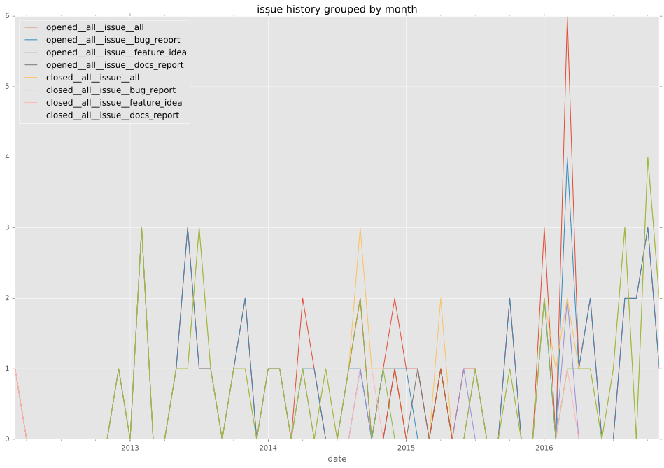
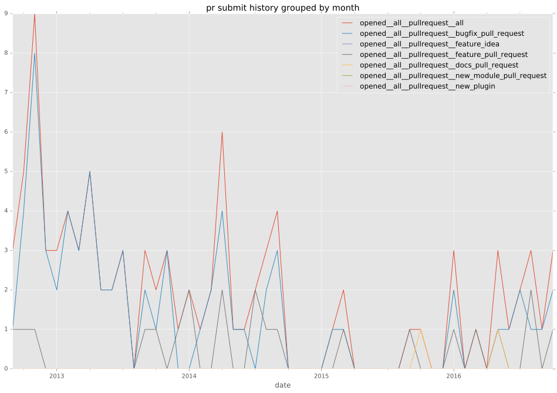
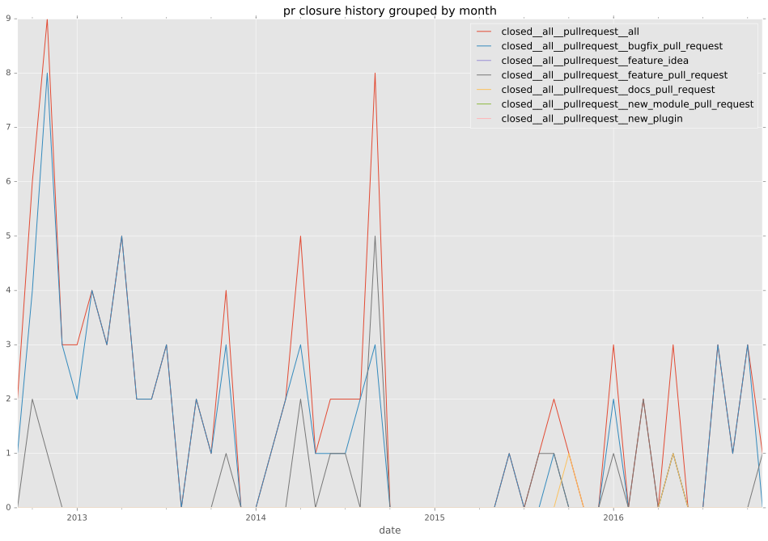
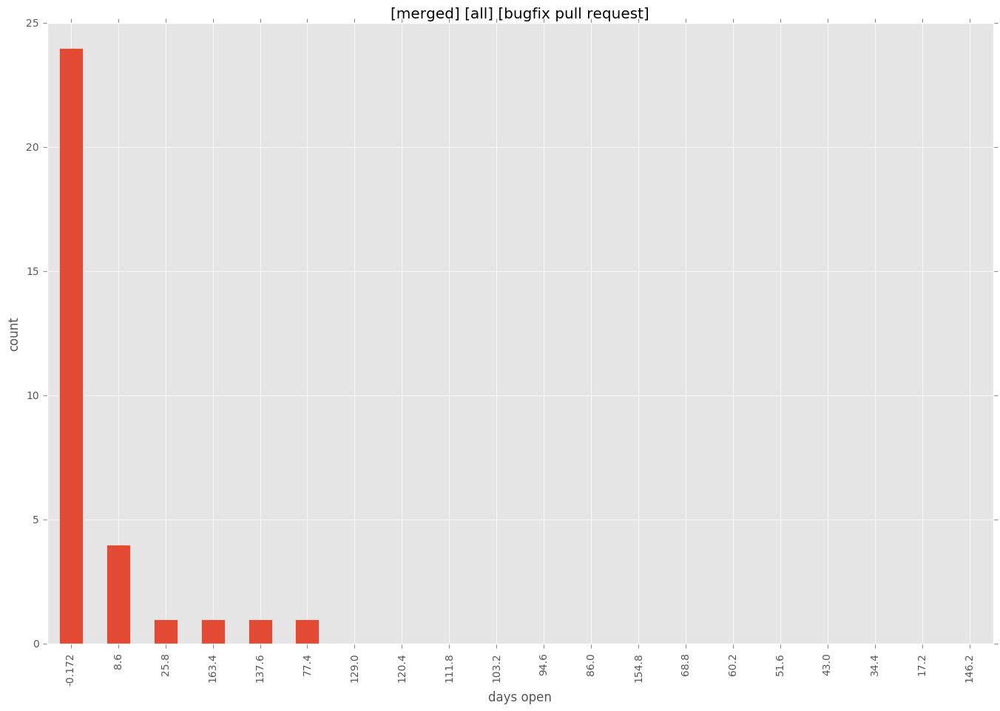
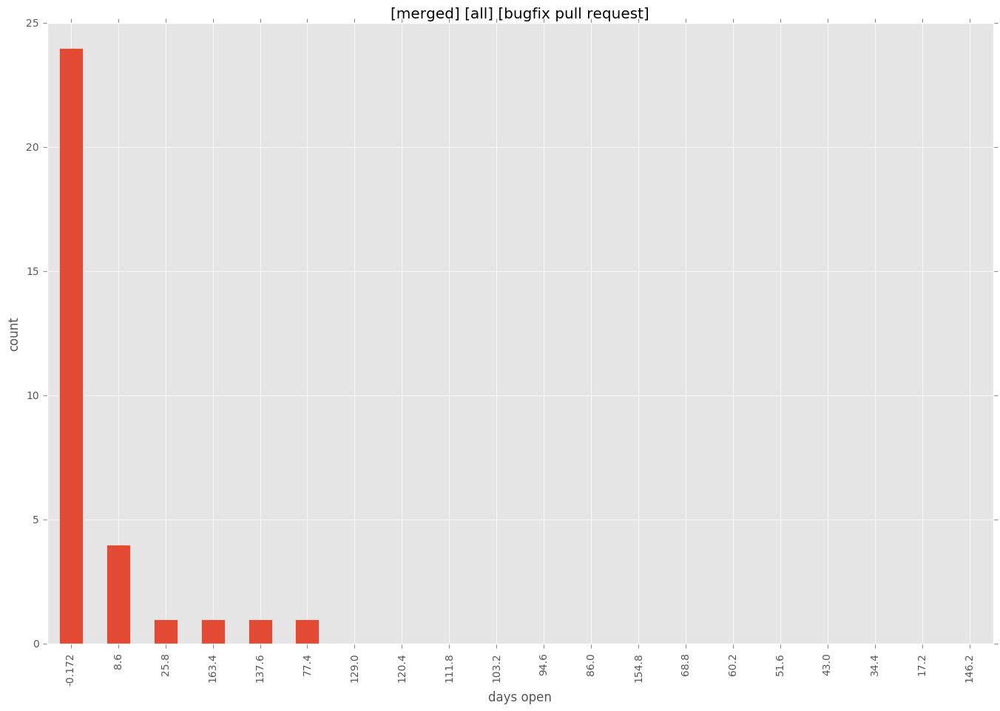

total issue counts
unknown: 2
feature pull request: 21
docs report: 5
pullrequest: 97
docs pull request: 4
bugfix pull request: 70
feature idea: 6
issue: 51
bug report: 40
issue history

pullrequest history


days open by issue type
bugfix pull request
count: 100
std: 32.8951487013
min: 0
max: 172
median: 0.0
mean: 11.01
all
count: 179
std: 67.4573234737
min: 0
max: 349
median: 1.0
mean: 28.2960893855
pullrequest
count: 0
std: nan
min: nan
max: nan
median: nan
mean: nan
docs pull request
count: 8
std: 0.0
min: 0
max: 0
median: 0.0
mean: 0.0
docs report
count: 4
std: 67.7070897322
min: 0
max: 144
median: 27.5
mean: 49.75
feature pull request
count: 26
std: 106.667167467
min: 0
max: 346
median: 42.0
mean: 87.2692307692
feature idea
count: 4
std: 85.5740420143
min: 0
max: 174
median: 4.5
mean: 45.75
issue
count: 0
std: nan
min: nan
max: nan
median: nan
mean: nan
bug report
count: 35
std: 85.4780231228
min: 0
max: 349
median: 1.0
mean: 37.4857142857
closures grouped by total days open
 
